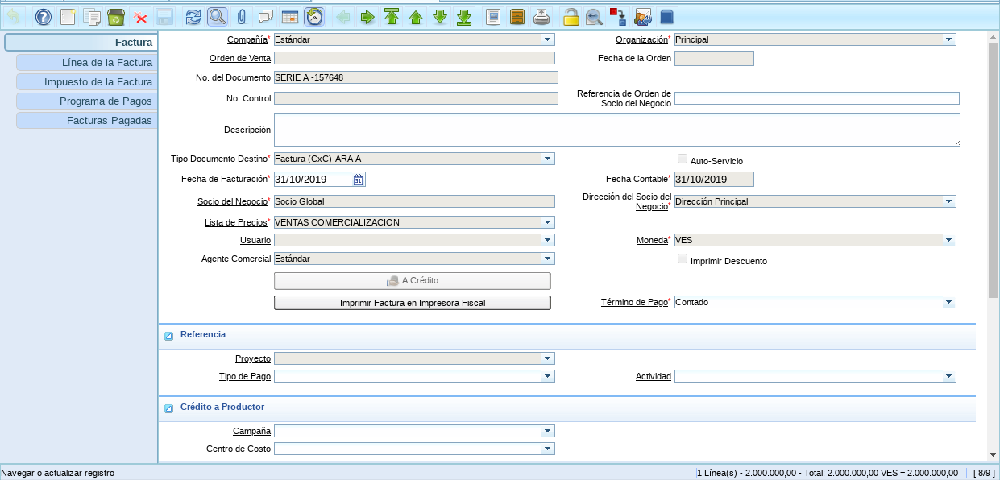
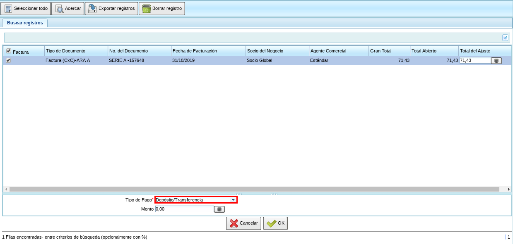
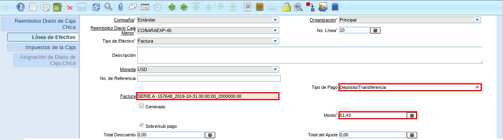

Diario de Caja Chica¶
Ubique y seleccione en el menú de ADempiere, la carpeta “Gestión de Saldos Pendientes”, luego seleccione la carpeta “Caja”, por último seleccione la ventana “Diario de Caja Chica”.

Imagen 1. Menú de ADempiere¶
Seleccione el icono “Registro Nuevo”, en la barra de herramientas de ADempiere.

Imagen 2. Icono Registro Nuevo de la Ventana Reembolso Diario de Caja Chica¶
Warning
Es necesario que la tasa de conversión se encuentre actualizada y de acuerdo al tipo de conversión predeterminado, ya que la conversión configurada en la cobranza toma el tipo de conversión predeterminado.
Luego de realizar el proceso regular de llenado de los campos principales, seleccione la opción “Crear desde Factura”.

Imagen 3. Opción Crear desde Factura¶
Podrá apreciar la ventana del proceso “Crear desde Factura”, con diferentes campos para filtar la busqueda.

Imagen 4. Ventana del Proceso Crear desde Factura¶
Seleccione en el campo “Fecha de Facturación”, la fecha de la factura a cobrar.

Imagen 5. Campo Fecha de Facturación¶
Seleccione en el campo “Socio del Negocio”, el socio del negocio cliente de la factura a cobrar.

Imagen 6. Campo Socio del Negocio¶
Seleccione la opción “Comenzar Búsqueda”, para buscar las facturas que el socio del negocio cliente tiene con la empresa.

Imagen 7. Opción Comenzar Búsqueda¶
Para ejemplificar el registro es utilizada la factura número “SERIE A -157648” del socio del negocio cliente “Estándar”, la cual es emitida en moneda “VES”, con un monto de “2.000.000,00”.
Imagen 8. Factura del Socio del Negocio Cliente¶
Podrá visualizar las diferentes facturas por pagar que el socio del negocio cliente tiene con la empresa, con la conversión de la moneda “VES” de la factura a la moneda “USD” de la caja cobranza creada.

Imagen 9. Facturas del Socio del Cliente con Conversión¶
Warning
Al buscar una factura emitida con una moneda diferente a la moneda seleccionada en la cobranza, ADempiere realiza la conversión del monto de la factura a la moneda seleccionada para el cobro.
Seleccione la factura en la que el socio del negocio cliente esta abonando o cancelando un monto, para este ejemplo la factura a seleccionar es la número “SERIE A -157637”.

Imagen 10. Seleccionar Factura¶
Seleccione en el campo “Tipo de Pago”, la forma de pago utilizada por el socio del negocio cliente para abonar o cancelar dicho monto. Para ejemplificar el registro es utilizada la opción “Depósito / Transferencia”.
Imagen 11. Campo Tipo de Pago¶
Ingrese en el campo “Monto”, el monto que el socio del negocio cliente esta abonando o cancelando.

Imagen 12. Campo Monto¶
Seleccione la opción “OK”, para cargar a la pestaña “Línea de Efectivo” la información ingresada en la ventana del proceso “Crear desde Factura”.

Imagen 13. Opción OK¶
Podrá apreciar el mensaje “OK”, indicando que fue cargado el registro a la pestaña “Línea de Efectivo”.

Imagen 14. Mensaje OK¶
Seleccione la pestaña “Línea de Efectivo”, para verificar que los datos de los campos “Factura”, “Tipo de Pago” y “Monto” ingresados a la línea sean correctos.
Imagen 15. Pestaña Línea de Efectivo¶
Regrese a la ventana principal “Reembolso Diario de Caja Chica” y seleccione la opción “Completar”.

Imagen 16. Ventana Reembolso Diario de Caja Chica¶
Seleccione la acción “Completar” y la opción “OK”, para completar el documento.

Imagen 17. Acción Completar¶
Note
Al realizar una consulta de los saldos abiertos del socio del negocio, se pueden visualizar los saldos de las facturas en sus respectivas monedas. Adicional a ello, se puede apreciar en el campo “Total Pagado”, el monto pagado de la factura utilizada para el ejemplo con su respectiva moneda de emisión, a pesar de que la cobranza fue en una moneda diferente.